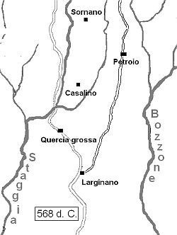

Introduzione e Mondo antico
Il presente capitolo è dedicato alla storia civile degli uomini e delle istituzioni di Quercegrossa, ed è distinto da quello della storia religiosa. Ma l'intersecarsi e l'intrecciarsi di avvenimenti attinenti il nostro territorio nei tempi più lontani dell'Alto medioevo, dalla fine del mondo romano alla civiltà comunale, mi porta, e credo sia giusto, a impostare inizialmente la narrazione in un unico racconto storico che vede le due facce della società, appunto quella civile e quella religiosa, interferirsi muovendosi di pari passo, crescendo l'una accanto all'altra in un processo di sviluppo civile e di organizzazione ecclesiastica.
Inoltre la nostra storia locale si inserisce in quelle maggiori di Siena e della Toscana alle quali farò costante riferimento richiamando i grandi e piccoli eventi che li caratterizzarono maggiormente, e trovarono, ovviamente, piena corrispondenza anche a Quercegrossa.
Continuando il nostro viaggio storico, dai primi del Duecento disgiungo i due argomenti e da quel secolo parlerò, in questo capitolo, solo di storia civile con il conflitto senese-fiorentino in primo piano e degli interessi del Comune di Siena e dei suoi cittadini nel contado di Quercegrossa; argomenti apportatori di numerosi elementi di cronaca con gran risalto al nostro territorio per almeno un secolo e mezzo. A partire poi dal quel grande avvenimento di portata europea che fu la peste nera del 1348, a causa della quale si lamentarono eccezionali perdite umane, la società venne stravolta nei settori vitali e il nostro territorio subì un impoverimento e un declassamento tali che per alcuni secoli rimase ai margini della politica e dell’economia senese come terra di frontiera e mai più si elevò ai fasti del castello e della vicaria; di questo periodo poche sono le memorie, ma non si può dimenticare la nascita a Quercegrossa dello scultore Jacopo della Quercia verso il 1374. Dopo la perdita della libertà senese nel 1559, caduti i confini con Firenze, le campagne di Quercegrossa, dove vigeva in pieno il sistema mezzadrile, vissero modestamente i secoli successivi seguendo l'andazzo generale di un’economia non molto brillante, anzi decisamente arretrata, sotto la conduzione di alcune famiglie senesi, mentre sul piano politico si osservarono pedissequamente le direttive granducali e poi italiane attraverso le nuove Comunità di Castelnuovo e Monteriggioni. Gli unici momenti di aggregazione sono rappresentati dalla Compagnia e dalle attività cultuali della parrocchia. Si deve arrivare al periodo fascista per annotare il primo atto di vitalità paesana con l'organizzazione di una Sottosezione fascista e al secondo dopoguerra per registrare la nascita di più sezioni partitiche a cui fecero contorno autonome iniziative popolari negli anni Sessanta, nate spontaneamente per esigere e ottenere quei servizi ormai indispensabili alla nuova realtà economica e sociale. Tento ora qui di seguito di compendiare con estrema chiarezza tutti i dati raccolti dai documenti degli archivi senesi, dalle opere del Repetti, del Merlotti e dai saggi degli studiosi senesi in generale, per offrirvi una più organica e inedita "Storia di Quercegrossa".
Il mondo antico
Partendo da un passato remotissimo, immaginiamo una terra sulla quale si svolge operosa l'esistenza di modeste aggregazioni familiari fondate sull'allevamento, sulla raccolta e sulla coltivazione di cereali. Questi gruppi vivono in una terra bagnata dai due torrenti, i futuri Staggia e Bozzone, le cui acque rendono favorevoli le coltivazioni e le condizioni di vita. Si giunge così agli albori della nostra storia, quando predomina quella cultura detta Villanoviana ed è in questo periodo che fioriscono insediamenti stanziali con più solide organizzazioni socio-economiche, progredite poi nei piccoli e grandi centri etruschi. Per quanto riguarda il nostro territorio possiamo supporre che gli occasionali stanziamenti si siano trasformati in modesti villaggi nelle zone d’altura prospicenti i due torrenti: insediamenti che noi potremo individuare in Petroio e nella stessa Quercegrossa.
Le abbondanti tracce archeologiche e i notevoli monumenti e suppellettili funerarie dell’epoca etrusca ritrovati nelle terre circostanti Quercegrossa, ossia Siena, Fonterutoli, Castellina e Monteriggioni, oltre ai ruderi attribuiti dalla voce popolare a una tomba etrusca di Macialla, ci offrono una preziosa conferma del consolidamento su questo ampio territorio di piccoli centri abitati che andranno più o meno sviluppandosi subendo quelle variazioni demografiche e ambientali determinati dagli eventi della storia. Si assiste in questo lunghissimo periodo storico all’assimilazione della civiltà etrusca da parte di Roma e alla fondazione della colonia romana Saena Julia al tempo di Augusto sul preesistente nucleo etrusco. Poi, per ciò che ci interessa, negli ultimi tempi dell'impero, cioè nei secc. IV-V d.C., abbiamo, nella continuità degli stanziamenti, la certezza di due centri abitati nei dintorni di Saena Julia, testimoniati dai resti dell'arco nella villa rustica romana di Petroio e della tomba di un cavaliere di quell'epoca ritrovata al Casalino e ricordata dal Merlotti.

Pertanto, basandoci su quanto detto e sulla toponomastica pervenutaci dalla centuriazione romana del Basso impero, possiamo abbozzare un quadro approssimativo per descrivere l’aspetto socio-economico del nostro territorio alla vigilia dell'invasione longobarda del 568 d. C.
Fermo restando che un discorso sulle strade del tempo si presenta assolutamente pieno di incognite, si può pensare che la strada principale Siena - Castellina avesse già tracciato il suo percorso di collegamento tra le colonie romane di Florentia e Sena Julia sulla quale in prossimità di quest’ultima si trovavano i centri di produzione agricola di Larginano, Quercegrossa e forse Macialla, ed è possibile si dipartisse una via da Larginano per raggiungere la villa di Petroio, strada aperta fino ai nostri tempi, e solo in seguito si sia creato il percorso alternativo della strada attuale del Casino e dell'Olmicino. Petroio era poi collegato da strade trasversali ai luoghi del Casalino e Sornano. Il territorio si doveva presentare quasi completamente boscoso con limitate superficie coltivate a frumento intorno alle case, essendo ancora da venire il tempo dei grandi disboscamenti che interessarono l'Italia intera nel IX e X secolo sotto la spinta di un timido ripopolamento delle campagne, conseguenza di una organizzazione più funzionale di tipo curtense.
Inizio pagina
Vai al capitolo seguente Il Medioevo
Vai all'Indice dei Capitoli